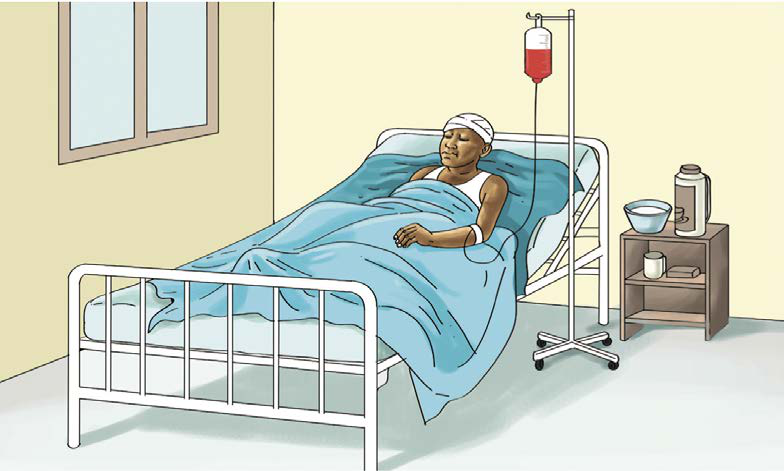

Maambukizi kutoka kwa mama kwenda kwa mtoto. Mgonjwa amelala kitandani hospitalini akiongezewa damu kwa njia ya mrija. Pembeni kuna chupa ya damu na vifaa vya huduma.(c) Maambukizi kutoka kwa mama kwenda kwa mtoto.Mtoto anaweza kupata VVU kutoka kwa mama anayeishi na VVU hasa wakati wa kujifungua.Vilevile, mtoto anaweza kupata VVU kutoka kwa mama anayeishi na VVU wakati wa kunyonya.
(d) Kufanya ngono na mtu mwenye VVU.Watoto hawatakiwi kujihusisha na vitendo vya ngono.Vilevile, wasipite na kucheza maeneo hatarishi yenye vishawishi vya kubakwa.Maeneo hayo ni kama vile vilabu vya pombe na kumbi za starehe.Maeneo mengine ni kama vile magofu ya nyumba na vibanda vya kuoneshea sinema.Aidha, ni muhimu kutoa taarifa kwa wazazi au walimu mapema endapo mtu yeyote ataonesha dalili za kutaka kukufanyia vitendo vya ngono ili kupata msaada sahihi.
VVU ni hatari na havina chanjo wala tiba.Hata hivyo, mtu